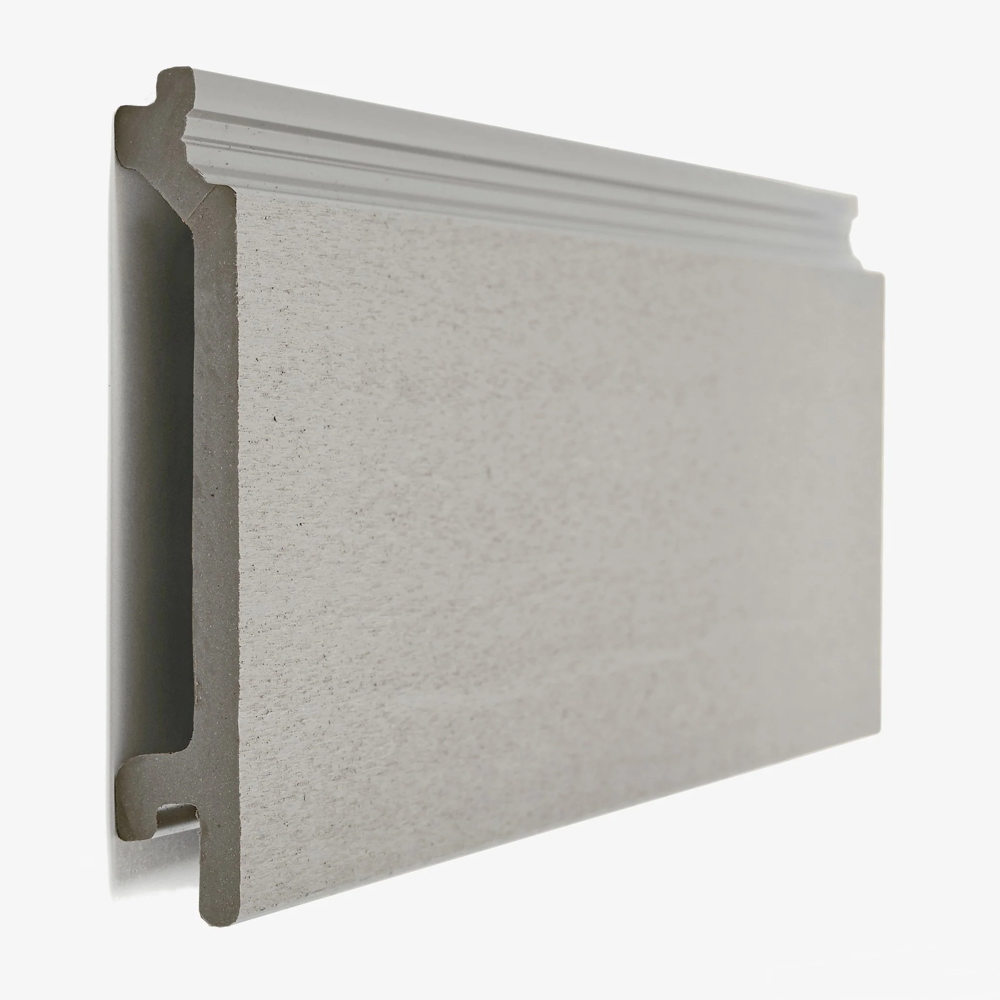

Taş & Kompozit Kaplama — Bakım Rehberi
Derz yenileme, doğru temizleme ve koruyucu uygulamalarla dış cephe taş ve kompozit yüzeyleri uzun ömürlü tutmanın pratik yöntemleri. İlgili hizmet sayfası: Taş & Kompozit.

Giriş
Dış cephede doğal taş (traverten, mermer, bazalt vb.) ve kompozit (HPL, fiber çimento, kompozit panel) kaplamalar iklim, kir ve UV ile sürekli temas eder. Doğru temizleme kimyası, sağlam derz ve nefes alan koruyucularla yüzey ömrü belirgin şekilde uzar.
Temizleme & Leke Çıkarma

- pH uyumu: Kalsit içerikli taşlarda (mermer/traverten) asitli ürün kullanılmaz. Nötr/alkali temizleyiciler tercih edilir.
- Pas/akma lekesi: Demir içeren lekelerde asitsiz şelatör bazlı ürün veya poultice (çekme macunu) uygulanır.
- Yağ lekesi: Emici taşlarda çözücü + poultice; kompozitte mikro fiber ve uygun deterjan yeterlidir.
- Tuz kusması (efloresans): Düşük basınçlı su, ardından üretici onaylı efloresans giderici ve iyi durulama.
- Deneme alanı: Her kimyasal önce 30×30 cm deneme alanında test edilmelidir.
Derz Yenileme & Onarım
- Söküm: Gevşemiş/çatlamış derzler 3–5 mm derinliğe kadar kazınır, tozdan arındırılır.
- Malzeme: Dış mekân, polimer takviyeli, düşük su emimli derz harcı; hareket noktalarında mastik.
- Genleşme derzleri: 4–6 mm aralıkta backer rod + UV dayanımlı nötr silikon/polisülfid.
- Kür: Uygulama sonrası min. 24–48 saat su yükünden kaçınılır.
Koruyucu Uygulamalar (Sealer/Impregnator)
- Silane/siloxane emprenye: Su itici, nefes alan koruma; görünümü değiştirmez (natural look).
- Islak görünüm (wet-look) vernikler: Traverten/bazalt gibi taşlarda doku derinliği verir; UV stabilitesi yüksek ürün seçin.
- Kompozit panel: Üretici onaylı antistatik/UV topcoat; çiziklerde lokal yenileme mümkündür.
- Uygulama: Kuru yüzeye 2 kat ıslak üstüne ıslak; gölgede, rüzgârsız ortamda.
Yosun-Küf & Yağmur İzleri
- Biyosit: Yapıya uygun, klor içermeyen biyosit uygulanır; 10–15 dk bekleme + bol suyla durulama.
- Drenaj: Oluk ve damlalıkların tıkanıklığı giderilmeli; su izleri genelde akış hatasından oluşur.
- Gölge/nemli cephe: Periyodik sıklık artırılır, yüzeyde kalıcı kararma önlenir.
Basınçlı Yıkama: Riskler & Ayarlar
- Basınç: 80–120 bar aralığı yeterlidir; derz ve kenarlara doğrultmayın.
- Mesafe: Tabancayı yüzeyden 30–40 cm uzakta tutun; yelpaze uç kullanın.
- Sıra: Ön ıslatma → temizleyici → yumuşak fırça → durulama. Sıcak su, kompozitte üreticiye göre.
Periyodik Bakım & Bütçe
| İş Kalemi | Periyot | Açıklama | Aralık (₺/m²) |
|---|---|---|---|
| Genel temizlik | 6–12 ay | pH nötr/uygun kimya ile yıkama | … |
| Derz yenileme | 3–5 yıl | Polimer takviyeli derz + mastik | … |
| Su itici emprenye | 2–4 yıl | Silane/siloxane 2 kat | … |
Kesin fiyat için yüzey tipi, yükseklik (iskele), m² ve erişime göre yerinde keşif yapıyoruz.
Sık Sorulan Sorular
Mermer/travertende sararma var, nasıl giderilir?
Asitsiz şelatör + poultice ile lokal uygulama yapılır, ardından nötrleştirme ve su itici emprenye uygulanır.
Derzler neden çatlıyor?
Hareket derzlerinin iptal edilmesi, UV ve su yükü veya yanlış harç seçimi. Çözüm: genleşme derzi açmak, polimer katkılı harç ve uygun mastik.
Basınçlı yıkama yüzeye zarar verir mi?
Yüksek basınç derzi oyabilir. 80–120 bar aralığı, 30–40 cm mesafe ve yelpaze uçla güvenli çalışılır; önce deneme alanı.
Teklif Çağrısı
Yüzey tipini yerinde tespit edip deneme alanı açalım; temizlik + emprenye tek günde!